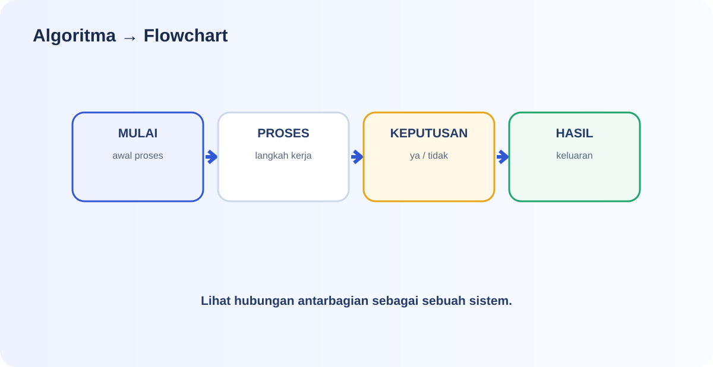
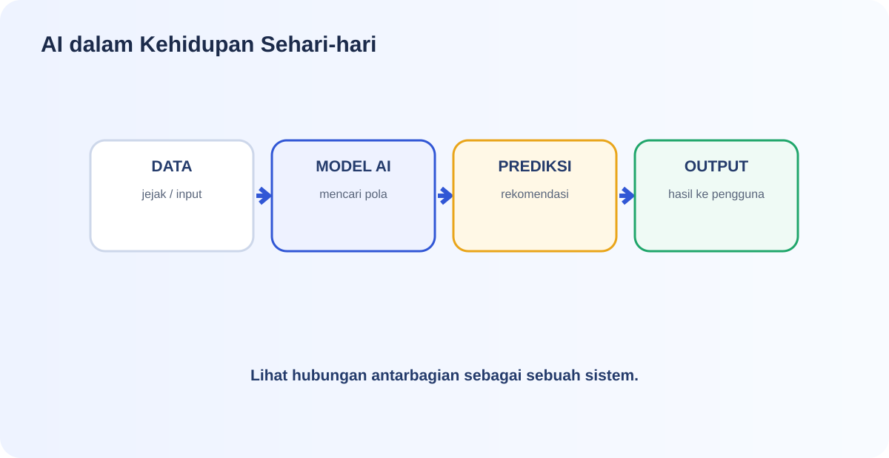
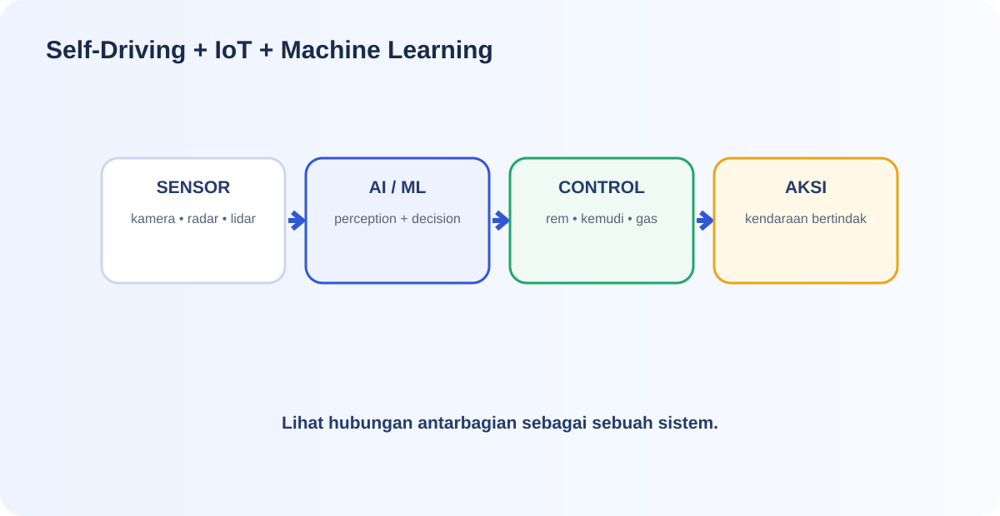
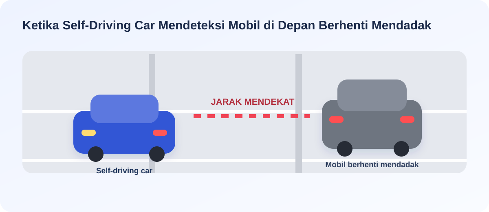

Algoritma, AI, IoT & Literasi Digital
Versi pendalaman untuk Kelas XII Fase F. Setiap subtopik berisi konsep, contoh, penerapan, pertanyaan pemantik, dan dua mini game berbasis kasus.
Algoritma dan Flowchart
Algoritma adalah cara berpikir terstruktur sebelum solusi diterapkan menjadi program atau sistem digital.

1. Algoritma bukan sekadar daftar langkah
Algoritma adalah urutan langkah yang logis dan sistematis untuk menyelesaikan masalah. Dalam Informatika, algoritma membantu kita mengubah masalah yang besar menjadi langkah-langkah yang lebih kecil dan dapat dikerjakan.
2. Struktur algoritma
Sequence: langkah dijalankan berurutan.
Selection: sistem memilih tindakan berdasarkan kondisi.
Iteration: langkah diulang selama kondisi tertentu terpenuhi.
3. Flowchart
Flowchart memvisualisasikan algoritma dengan simbol standar agar alur mudah ditelusuri.
| Simbol | Peran |
|---|---|
| Oval | Start / End |
| Persegi panjang | Process |
| Jajar genjang | Input / Output |
| Belah ketupat | Decision |
| Panah | Arah alur |
4. Contoh: sistem menentukan boleh atau tidak mengikuti ujian
Perhatikan bahwa decision dapat lebih dari satu. Inilah yang membuat flowchart berguna untuk memeriksa apakah alur berpikir kita lengkap.
Hubungan dengan AI
Banyak sistem AI tetap membutuhkan aturan, alur data, input, proses, dan output. Algoritma membantu kita menjelaskan “apa yang harus terjadi” sebelum memikirkan teknologi yang digunakan.
🎮 Mini Game 1 — Decision Detector
1 poinPilih kartu dalam urutan yang benar.
Susun langkah sistem parkir untuk aturan: “Jika durasi parkir lebih dari 2 jam, tarif = Rp10.000; jika tidak, tarif = Rp5.000.”
🎮 Mini Game 2 — Flowchart Logic
1 poinPilih kartu dalam urutan yang benar.
Susun langkah sistem login dari awal sampai sistem memberikan akses atau menolak akses.
Bagaimana AI Digunakan di Kehidupan Kita?
AI dapat digunakan untuk mengenali pola, mengelompokkan objek, membuat prediksi, menghasilkan konten, atau membantu pengambilan keputusan.

1. AI di balik aktivitas sehari-hari
Ketika kita menerima rekomendasi video, menggunakan face unlock, melihat rute, atau menerima prediksi kata pada keyboard, sistem digital dapat memanfaatkan data dan model untuk menghasilkan keluaran yang relevan.
Rekomendasi
Sistem mempelajari pola interaksi untuk memperkirakan konten yang relevan.
Pengenalan
Sistem menganalisis pola pada gambar, suara, atau teks.
Prediksi
Sistem menggunakan pola data untuk memperkirakan keluaran tertentu.
2. AI, data, model, dan output
Semakin relevan dan berkualitas data yang digunakan, semakin masuk akal hasil yang dapat dihasilkan model. Namun kualitas output tetap bergantung pada cara sistem dibuat dan digunakan.
3. AI generatif vs AI prediktif
| Jenis | Fokus | Contoh keluaran |
|---|---|---|
| Prediktif / klasifikasi | Mengenali pola atau memperkirakan sesuatu. | Label spam, rekomendasi, prediksi. |
| Generatif | Menghasilkan konten baru berdasarkan instruksi/data pembelajaran. | Teks, gambar, audio, kode. |
🎮 Mini Game 1 — AI or Rule?
1 poin • boleh mengulangSistem berikut manakah yang paling tepat disebut menggunakan model AI untuk mengenali pola?
🎮 Mini Game 2 — Follow the Data
1 poin • boleh mengulangSebuah platform video mempelajari video yang sering ditonton pengguna lalu memberi rekomendasi konten. Bagian “rekomendasi” paling tepat dipandang sebagai…
Self-Driving Car, IoT, dan Machine Learning
Pelajari bagaimana sensor menghasilkan data, model memproses pola, dan sistem menerjemahkan keputusan menjadi tindakan.

1. Self-driving secara sederhana
Sensor
Kamera, radar, lidar, GPS, dan sensor lain mengumpulkan informasi lingkungan.
Perception
Sistem mengolah data sensor untuk mengenali objek dan kondisi.
Decision
Sistem memilih tindakan yang dianggap sesuai dengan kondisi dan tujuan.
Control
Keputusan diterjemahkan menjadi kendali pada rem, kemudi, atau akselerasi.
2. Mengapa machine learning dibutuhkan?
Lingkungan nyata memiliki sangat banyak variasi. Sistem dapat memanfaatkan data dan model untuk belajar mengenali pola yang sulit ditulis hanya dengan aturan “jika-maka” yang sederhana.
3. IoT dan machine learning saling melengkapi
| Bagian | Pertanyaan kunci |
|---|---|
| IoT | “Bagaimana perangkat menangkap dan mengirim data?” |
| Machine Learning | “Bagaimana data dipelajari untuk klasifikasi/prediksi?” |
| Actuator / perangkat fisik | “Tindakan apa yang dilakukan sistem?” |
🎮 Mini Game 1 — Self-Driving Flow
1 poinJika kamera mendeteksi pejalan kaki menyeberang, alur paling tepat adalah…
🎮 Mini Game 2 — IoT or ML?
1 poinDalam tempat sampah pintar, kamera/sensor mengirim data benda yang terdeteksi ke sistem untuk diproses. Proses tersebut paling berkaitan dengan…
🎮 Mini Game 3 — Emergency Response
1 poinKetika self-driving car mendeteksi adanya mobil yang berada di depannya berhenti mendadak, mekanisme apa yang terjadi saat itu?

AI Detective: Membedakan Hoaks dan Informasi yang Belum Terverifikasi
Tantangan utama bukan sekadar menemukan “gambar AI”, tetapi menentukan apakah klaim yang menyertai informasi tersebut dapat dipercaya.

1. Empat lapisan pemeriksaan
Lihat
Periksa teks, jari/tangan, wajah, bayangan, refleksi, perspektif, logo, dan detail kecil.
Pertanyakan
Siapa sumbernya? Kapan diunggah? Di mana? Apa konteks klaimnya?
Verifikasi
Bandingkan dengan sumber resmi, berita kredibel, sumber primer, atau sumber independen lain.
Simpulkan
Bedakan fakta yang terverifikasi, klaim yang belum terverifikasi, dan dugaan yang memerlukan pemeriksaan lebih lanjut.
2. Jangan terjebak “AI detector” tunggal
Satu ciri visual tidak cukup untuk memastikan gambar dibuat AI. Detail yang janggal dapat menjadi sinyal untuk memeriksa lebih lanjut. Penilaian harus menggabungkan visual, konteks, dan sumber.
3. Pisahkan tiga hal
| Fakta yang terlihat | Klaim | Kesimpulan sementara |
|---|---|---|
| “Saya melihat tangan objek memiliki bentuk yang tidak konsisten.” | “Gambar ini menunjukkan peristiwa X.” | “Klaim belum cukup kuat; perlu verifikasi sumber.” |

🎮 Mini Game 1 — Evidence Judge
1 poinSebuah foto viral memiliki tangan yang tampak janggal. Seseorang langsung berkata, “Pasti AI.” Respons yang paling tepat?
🎮 Mini Game 2 — Hoaks or Unverified?
1 poinSebuah gambar klaim “kejadian X” beredar, tetapi belum ditemukan sumber resmi atau sumber independen yang menguatkannya. Label yang paling aman adalah…
Data BPS Menjadi Infografis Interaktif dengan ChatGPT
Prosesnya bukan “masukkan data lalu AI mengerjakan semuanya”, tetapi memahami data terlebih dahulu, kemudian menggunakan AI untuk membantu membangun produk.

1. Baca metadata
Periksa judul tabel, variabel, definisi, satuan, wilayah, periode, dan sumber.
2. Tentukan pesan utama
Tanyakan: pola apa yang paling penting? Apa perbandingan yang ingin dilihat pembaca?
3. Pilih visualisasi
Bar chart cocok untuk perbandingan; line chart untuk perubahan dari waktu ke waktu; kartu angka untuk indikator utama.
4. Gunakan ChatGPT
AI dapat membantu merangkum, menyusun struktur halaman, menulis HTML/CSS/JavaScript, dan memperbaiki interaksi.
Contoh alur proyek
“Berdasarkan data BPS berikut, buatkan infografis interaktif berbasis HTML, CSS, dan JavaScript. Tampilkan 3 temuan utama, satu grafik perbandingan, kartu statistik, dan sumber data. Jangan mengubah angka sumber. Beri label satuan dan periode dengan jelas. Pastikan grafik tidak menyesatkan.”
🎮 Mini Game 1 — Chart Choice
1 poinKamu ingin membandingkan jumlah penduduk 10 kabupaten/kota pada satu tahun yang sama. Visualisasi yang paling tepat untuk memulai adalah…
🎮 Mini Game 2 — Data Integrity
1 poinAI membuat angka baru karena “terlihat lebih rapi”, padahal angka tersebut tidak ada di tabel BPS. Tindakan yang paling tepat?
One-Shot Prompt: Menghasilkan Gambar Sesuai Keinginan
Tujuan latihan ini bukan sekadar menulis prompt panjang, tetapi belajar menyusun instruksi yang memuat informasi penting sejak awal.

Struktur prompt
1. Subjek & aksi
Siapa/apa yang harus muncul? Sedang melakukan apa?
2. Lokasi & suasana
Di mana adegan berlangsung? Apa suasana atau mood yang diinginkan?
3. Komposisi & kamera
Close-up, medium shot, wide shot, sudut pandang, fokus objek.
4. Gaya & visual
Fotorealistik, ilustrasi, 3D, sinematik, warna natural, dan sebagainya.
5. Pencahayaan
Misalnya soft light, golden hour, studio lighting, backlight.
6. Output & batasan
Rasio 16:9, tanpa teks, tanpa watermark, atau batasan visual lain yang diperlukan.
“Seorang siswa SMA sedang menggunakan laptop di laboratorium komputer sekolah, duduk di depan meja dengan beberapa komputer di belakang, suasana modern dan fokus, medium shot, gaya fotografi realistis, pencahayaan lembut dari jendela, warna natural, detail tinggi, rasio 16:9, tanpa teks dan watermark.”
One-shot challenge
Bayangkan guru meminta gambar: “Suasana kelas SMA sedang belajar AI di laboratorium komputer.” Sebelum menjalankan generator, tulis prompt yang sudah memuat subjek, aksi, lokasi, komposisi, gaya, pencahayaan, rasio, dan batasan.
🎮 Mini Game 1 — Tebak Prompt
1 poin • 1 gambarPerhatikan gambar AI berikut. Prompt mana yang paling sesuai untuk menghasilkan gambar tersebut?

🎮 Mini Game 2 — Missing Detail
1 poinPrompt sudah menjelaskan subjek, aksi, lokasi, dan gaya visual. Namun hasil perlu konsisten untuk digunakan sebagai banner. Detail mana yang paling penting ditambahkan?